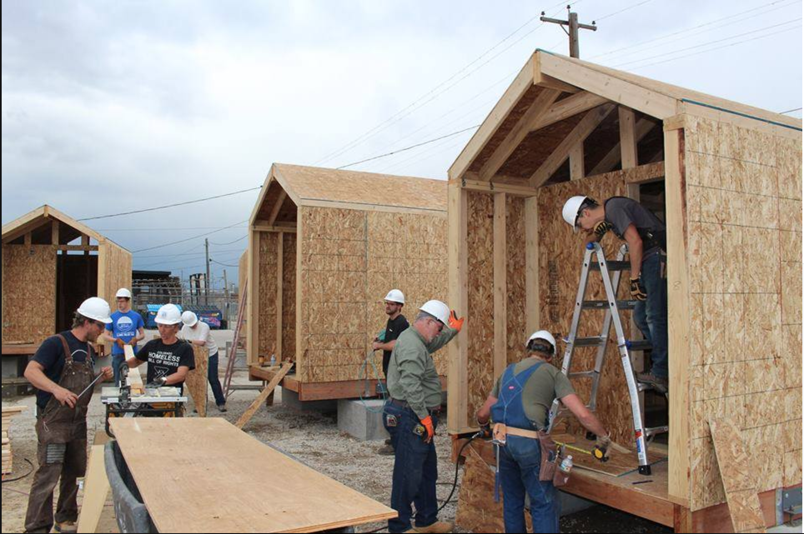
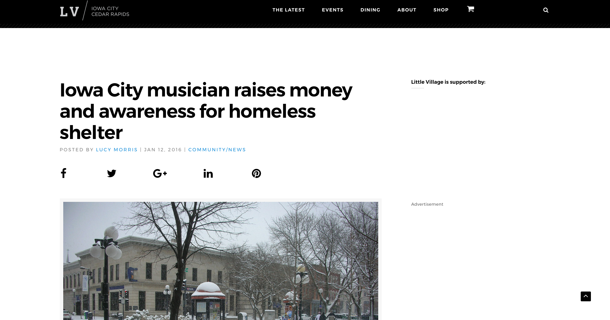
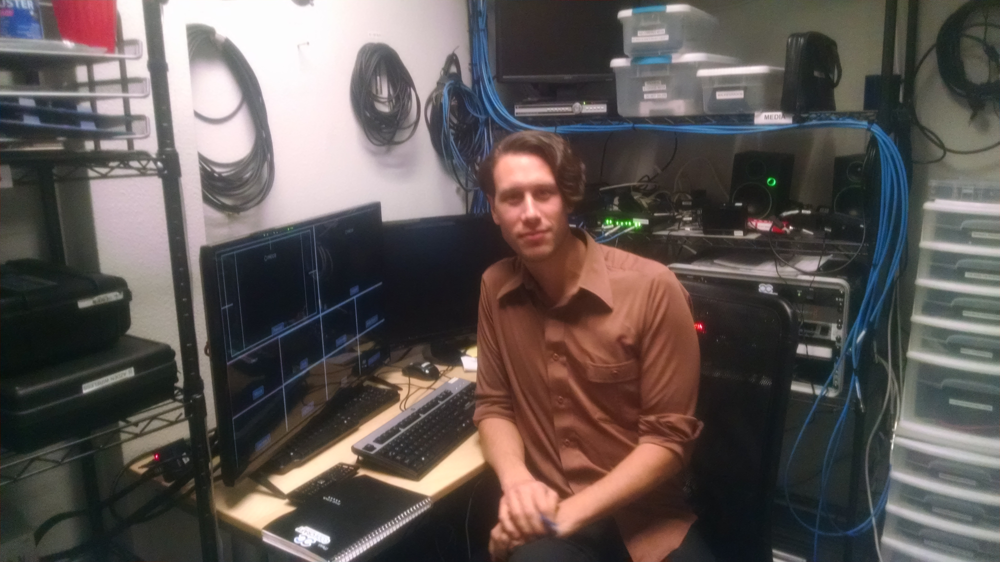

Résumé
EDUCATION
- CODECRAFT SCHOOL OF TECHNOLOGY: Boulder, CO Full Stack Web Development: Fall 2016
- STUDY ABROAD: LEAUPANA UNIVERSITY: Lüneburg, DE German Language: Spring 2014
- UNIVERSITY OF IOWA: Iowa City, IA: Bachelor of Arts: Environmental Anthropology: May 2014
EXPERIENCE
- DeveloperX.io
- This is a new startup from a lead developer at a large Boulder tech company. Our stack is mostly React native apps or Wordpress sites depending on the client. My role has been to take on all of the Wordpress work, working in-person with clients to organize their needs, create tickets of work to be done, and execute their site. I also am in an apprenticeship position under the React.js developer so that I can take on that work next month.
- ProgressNow Colorado
- I was brought in to help this non-profit in developing a mobile app for Android and iPhone. Because it needs to remain editable to non-coders, the app is built in Wordpress and 'wrapped' for mobile devices. My role has been to set up a mySQL database for user information and connect that information to GoogleCivic, OpenStates, and other APIs. The app will use location data to inform user's of their elected representatives as well as schedule push notifications for events and elections relevant to them. This project has also called on me to build custom plugins, a custom theme, and many custom functions that interact with the database. Daily, I write PHP and mySQL in our custom theme keeping in mind best practices relevant to Wordpress.
- Freelance Web Development
- Since graduating I have completed several projects for freelance clients and have an on-going role with these sites and as hosting manager. Many of these sites have been Wordpress sites that use eCommerce for the client to run themselves. I worked with a new startup to build a user-data tracking statistical database in MondoDB. Most recently, I built a platform for managing large groups that are traveling together for conferences or other destinations. This event management site displays relevant information about the trip, itinerary, and also takes in preferences from all those attending and posts these to a Google Sheet for the event planner. Each aspect of the site can be maintained by the event planner without working in code.Similarly, I built a site for a large family reunion where family members sign up for the event and begin a payment planned to share the cost of the event. In my free time, I also recently built a real-time voting app that utilizes Socket.io as well as an audio platform for musicians (Both are described further below).
- CodeCraft School of Technology
- During this intensive 10 week course I learned how to program all aspects of web technologies. Starting with a basis in HTML, CSS, and Javascript, we learned the more specialized uses of Bootstrap, JQuery, Node, Express and Mongoose. Aside from creating professional and exciting websites, we also set up databases that could take user logins, product inventories or perform other backend functions. Lastly, we learned the powerful Angular 2 framework built by Google that uses Typescript. I was on a group project team used Agile management to build a web application which used psychological research on learning to take in data on users and propose hints and reminders to keep the user in their best work-flow. In my final project, I built an engaging browser platform for multiple people to record a song, story, or mixtape over the web. This project utilized the Web Audio API, native Javascript, Express, Mongoose and has a MongoDB database. Final Project Demo
- Assurance Property Management
- I was trusted to work independently to resolve tenant and maintenance issues amongst 150 private units. The company was transitioning from outsourcing property work and I was motivated to learn new skills that expanded my role with them as well as offset thousands of dollars for the company.
- Iowa City Community School District
- As a substitute teacher, I served primarily as a resource for the various computer and IT courses between two large High Schools and three Junior Highs. Over time, I taught nearly every other subject as I developed great relationships with students and teachers.
- Louis Berger Group
- Assisting in the testing, digging, and surveying of potential cultural sites around Iowa.
- University of Iowa Anthropology Lab
- Worked on an excavation that found stone tools (lithics) dating to 800 AD.
- I trained to use electronic X-Ray Fluorescence machine which detected chemical makeup of specimens.
- I then independently developed a method in Excel to take XRF data and point toward a known quarry location where the stone tool would have been quarried. I published on my method as second author under the department chair Dr. James Enloe.
Publication
- "Lithic Raw Material Source Identification at Woodpecker Cave, Iowa"
- Enloe, James (University of Iowa), Brendan O'Keefe (University of Iowa), Tyler Buck (University of Iowa) and Rose McCarty (University of Iowa) Link to the Abstract

Involvement
- Denver Homeless Out Loud Tiny Homes Community
- I got to learn some small-scale building skills while working with an awesome group of future residents and volunteers.Homeless Out Loud
- Iowa City Winter Shelter Cot Campaign
- While volunteering at the shelter I saw they were short on cots and underfunded. I used social media to facilitate awareness and money, secured a discount from a camping supply store and within two days purchased enough cots for the rest of the winter. Link to Article
- DevFaction Meetup
- I am part of the team that helps run this technology meetup monthly. My duties include A/V setup, running the cameras or video control room, as well as editing the videos of the presentations Devfaction.com